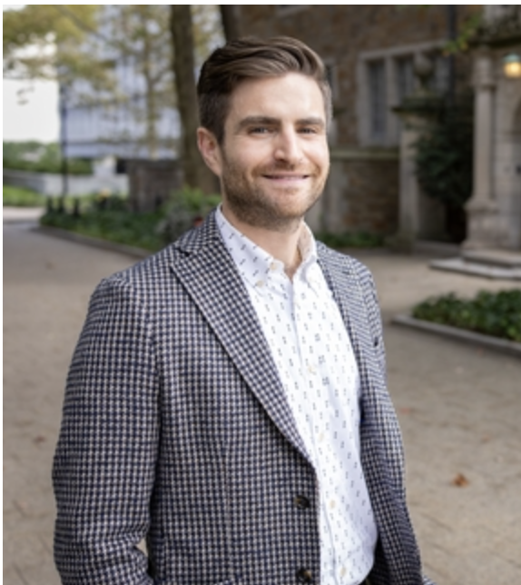
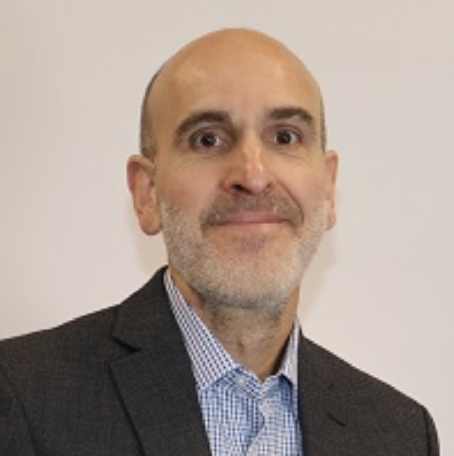
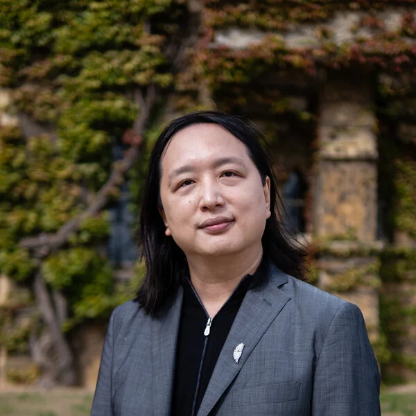
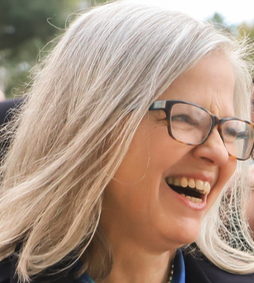
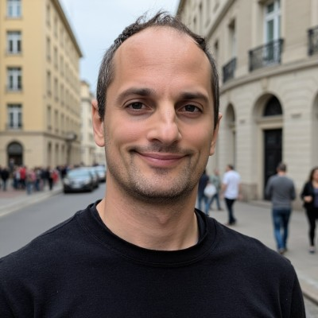
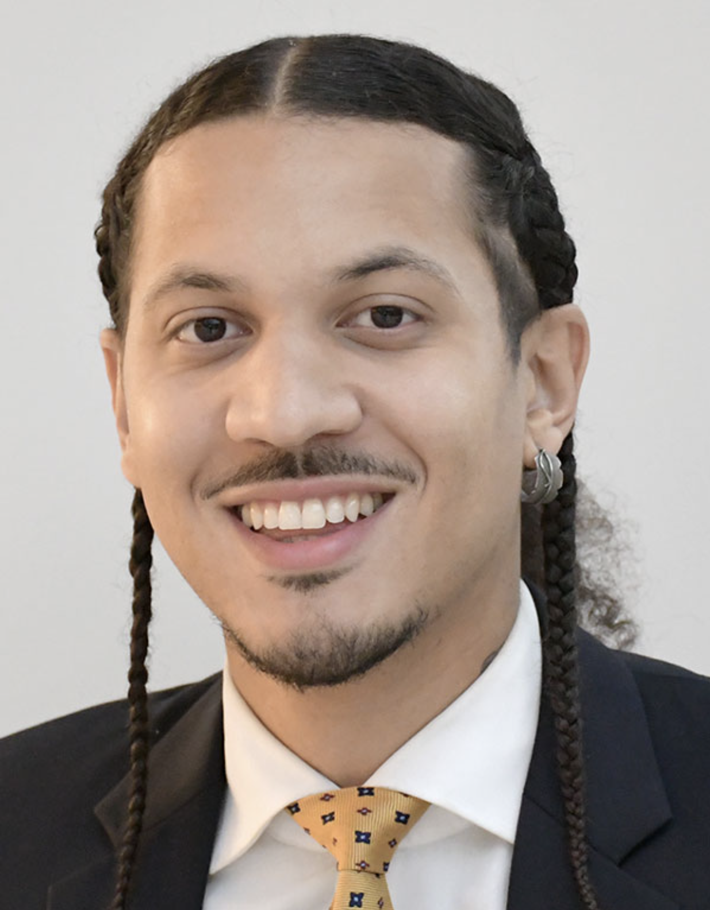
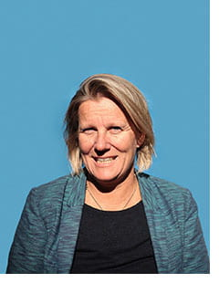

Coalition Partners

Sean Scanlon
State Comptroller
State of Connecticut
Connecticut State Comptroller Sean Scanlon has committed to endorse the assembly process and bring its recommendations to a dedicated legislative hearing, leveraging his constitutional authority on financial issues.

Joe DeLong
Executive Director
Connecticut Conference of Municipalities (CCM)
Joe DeLong serves as Executive Director of CCM and brings extensive experience in Connecticut municipal policy, local government, and statewide civic engagement.

Hélène Landemore
Chair, Interim Expert Governance Committee
Yale University
Hélène Landemore is a leading scholar of deliberative and participatory democracy and will serve as Chair of the Interim Expert Governance Committee.

Joshua Kalla
Associate Professor of Political Science & Statistics
Yale University
Joshua Kalla is an expert in political behavior and field experimentation, bringing rigorous empirical methods to the study of civic engagement and public opinion.

Michael E. Morrell
Associate Professor of Political Science
University of Connecticut
Michael Morrell researches deliberative democracy, political psychology, and civic participation, with deep expertise in how citizens engage with complex policy questions.
Project Staff

Gryffin Wilkens-Plumley
Assistant Project Manager · Design Lead
Read bio

George Rafael
Project Staff
Read bio
Joe Thornton
Communications Director
Read bio
Interim Expert Governance Committee Members
Alexander Guerrero
Rutgers University
Read bio
Ariel Procaccia
Harvard University
Read bio

Audrey Tang
Cyber Ambassador, Taiwan
Read bio


Hélène Landemore
Yale University
Read bio
Jane Suiter
Dublin City University
Read bio

Joshua Kalla
Yale University
Read bio

JT Flowers
Albina Vision Trust
Read bio
Lunda Asmani
Norwalk Public Schools; GFOA
Read bio
Michiel Bakker
MIT; Google DeepMind
Read bio
Oliver Hart
Harvard University
Read bio
Peter MacLeod
MASS LBP
Read bio

Sophie Guillain
Res publica
Read bio
Zephyr Teachout
Fordham Law School
Read bio
More members to be announced...